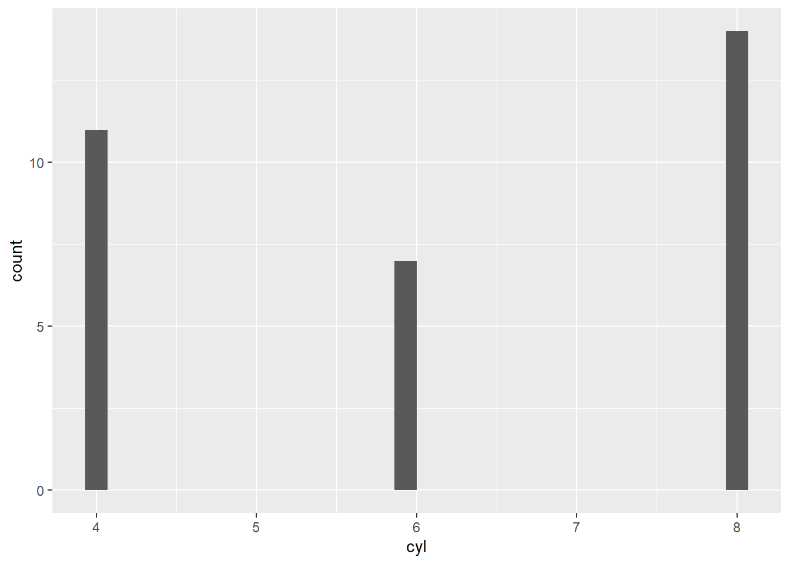
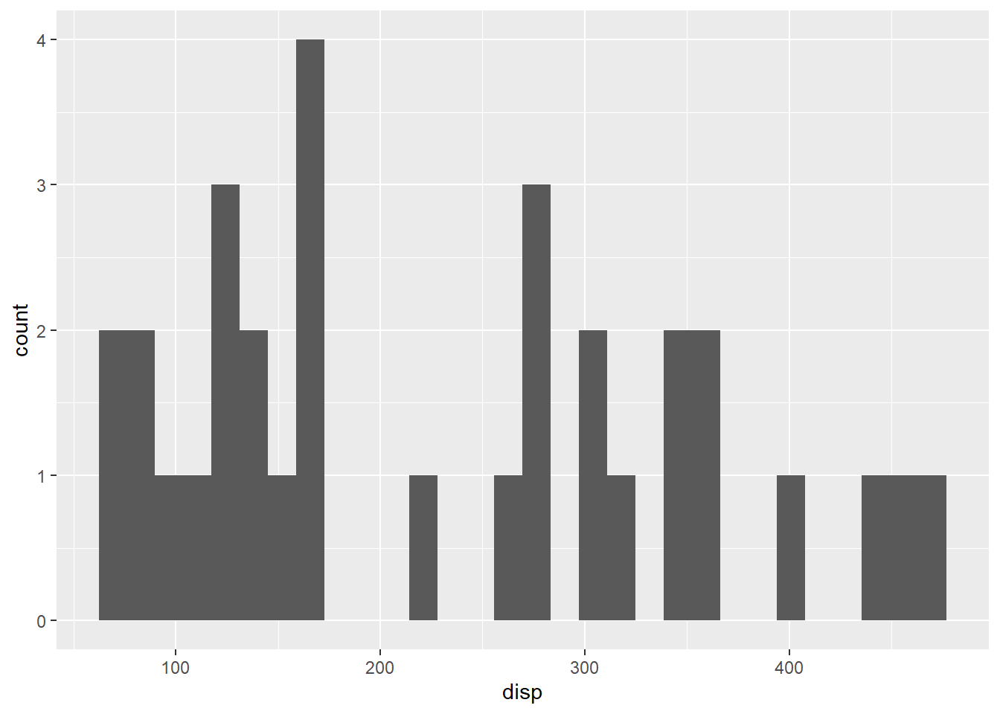
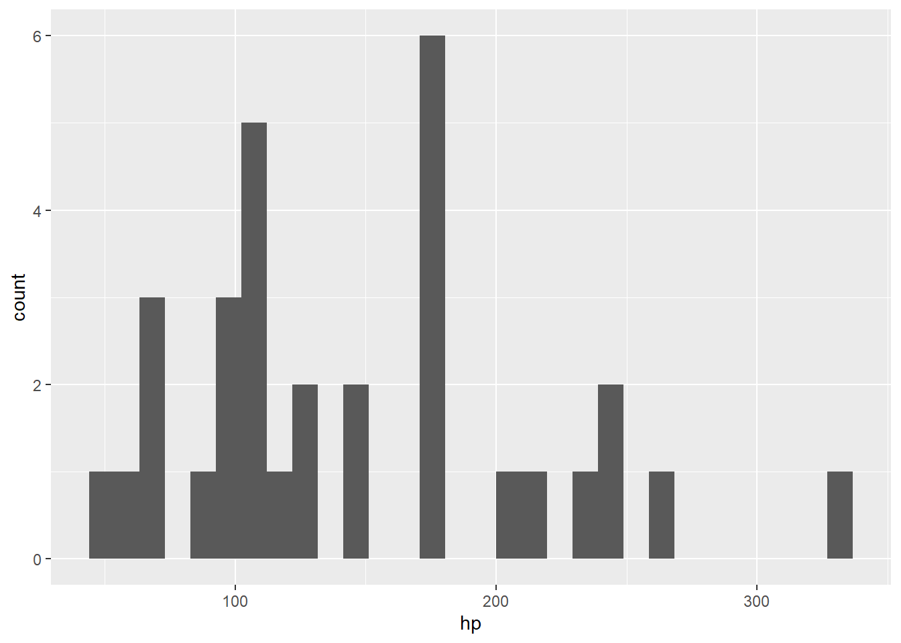
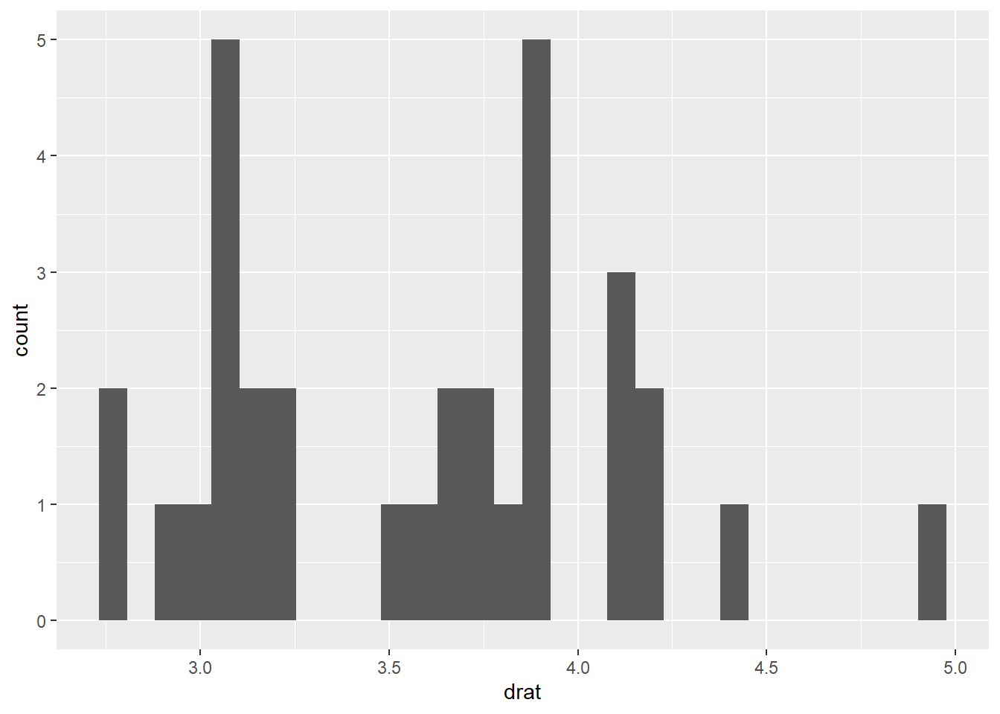
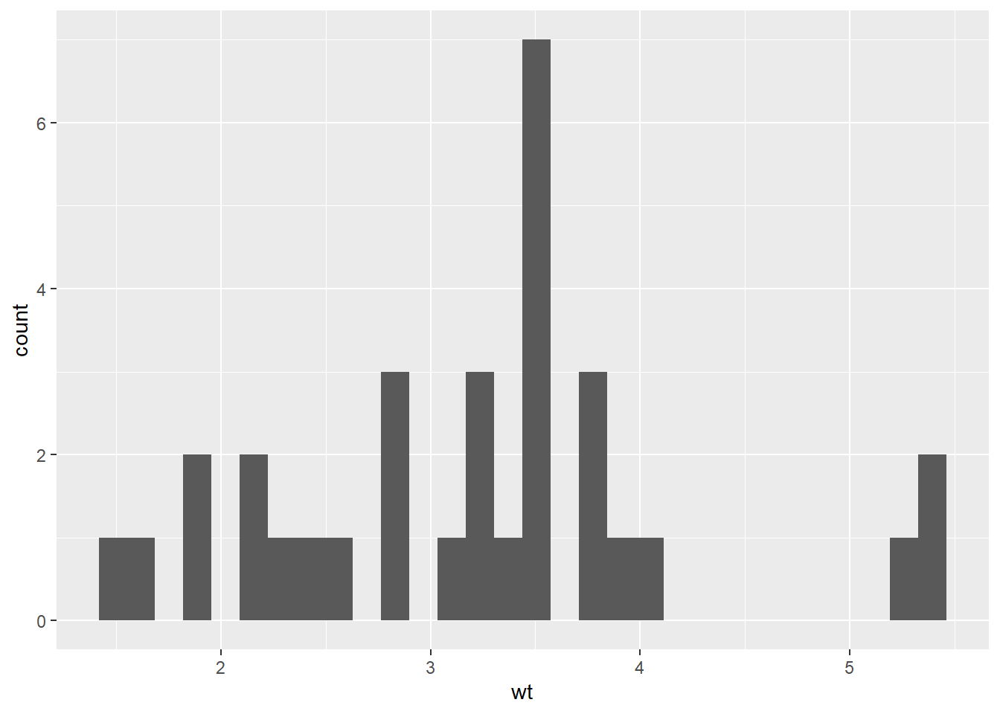
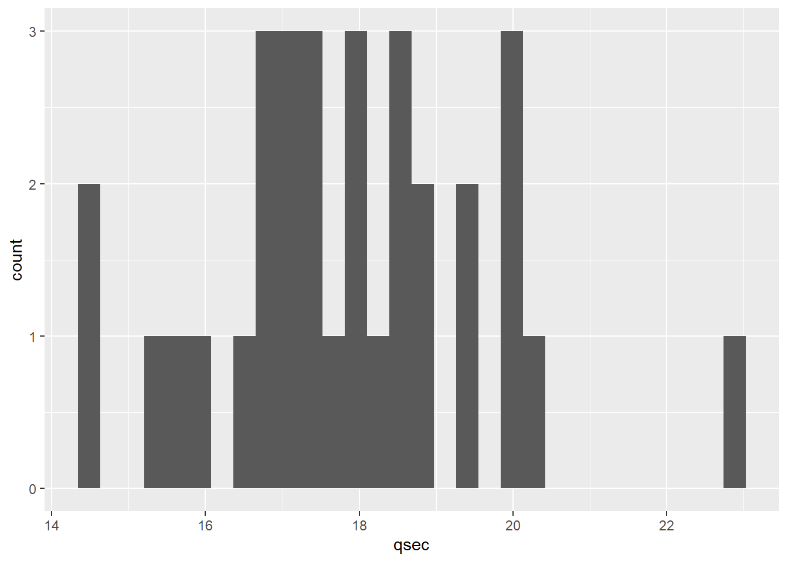
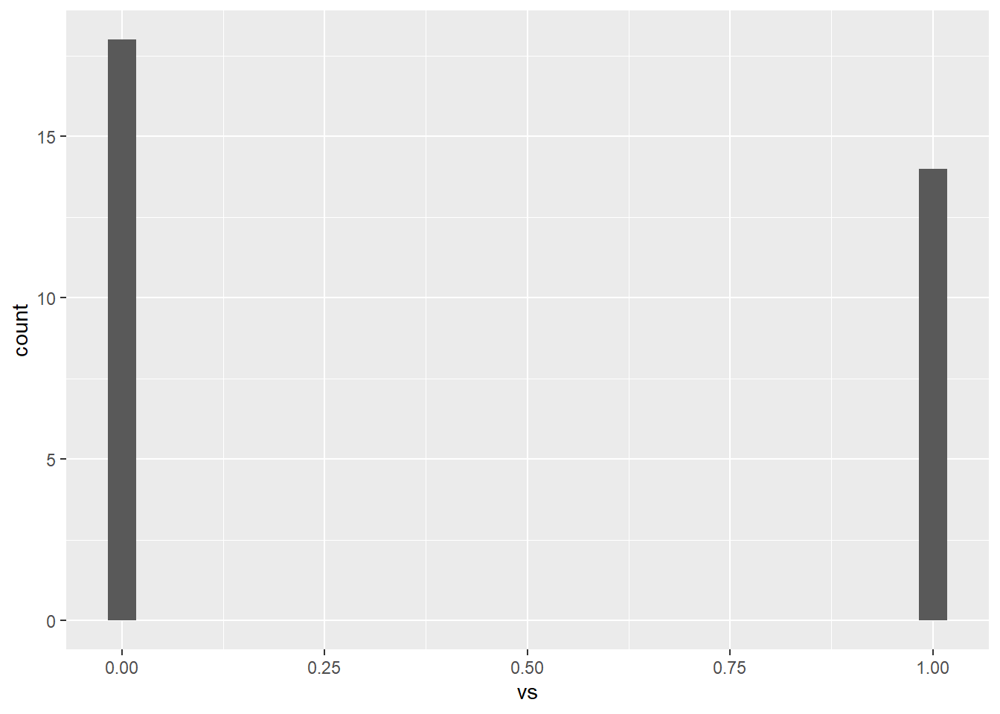
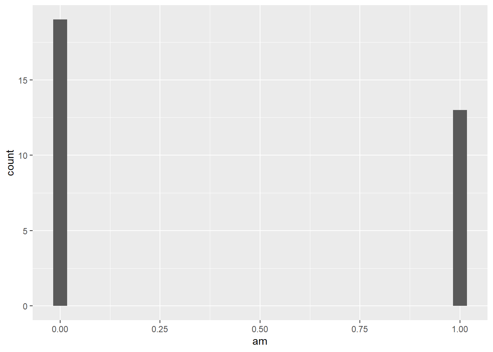
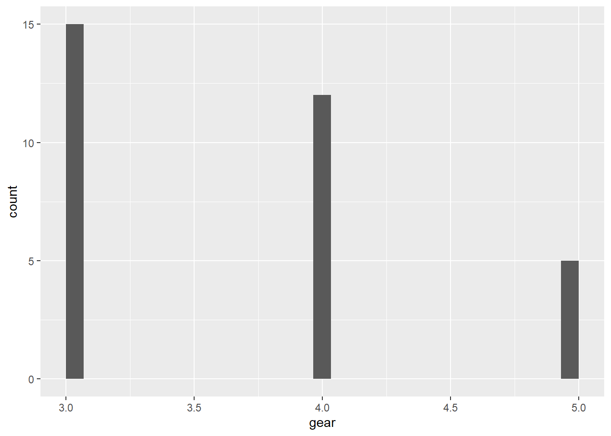
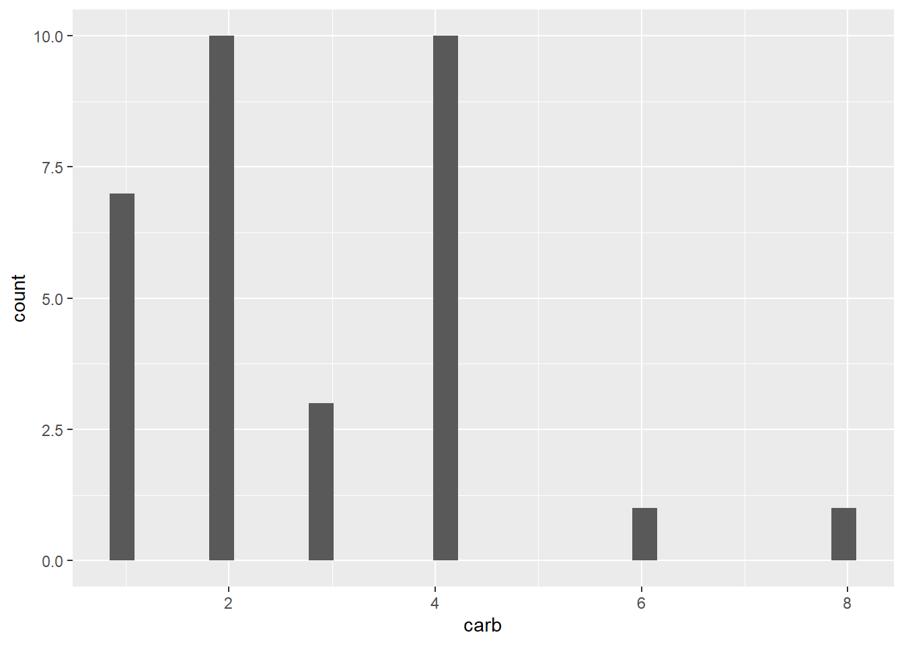

library(dplyr)Warning: package 'dplyr' was built under R version 4.2.2library(ggplot2)Warning: package 'ggplot2' was built under R version 4.2.2This section of the guidebook will discuss useful tips in R programming that would be helpful in any IIR projects. This article assumes that you have basic knowledge in R programming. If you are not familiar with R, we suggest that you read this free online book Hands-On Programming with R.
Suppose you have 2 data frames that are different in size. They share the same ID’s but the number of rows are different. Your goal is to copy one column from one data frame to another and you want the ID’s to match.
library(dplyr)Warning: package 'dplyr' was built under R version 4.2.2library(ggplot2)Warning: package 'ggplot2' was built under R version 4.2.2A <- tribble(
~id, ~year, ~GPA,
101, 2011, 3.5,
102, 2010, 3.6,
103, 2012, 2.8,
104, 2017, 3.8,
105, 2016, 2.6,
101, 2019, 3.7,
103, 2021, 2.5
)
B <- tribble(
~id, ~name, ~school,
104, "Jane Doe","Oakhill Academy",
101, "John Smith", "Faireview International School",
103, "James Lee", "Redwood College",
102, "Jordan Jones", "Lakeville University",
105, "Julia Garcia", "Mountainview Institute"
)
A# A tibble: 7 × 3
id year GPA
<dbl> <dbl> <dbl>
1 101 2011 3.5
2 102 2010 3.6
3 103 2012 2.8
4 104 2017 3.8
5 105 2016 2.6
6 101 2019 3.7
7 103 2021 2.5B# A tibble: 5 × 3
id name school
<dbl> <chr> <chr>
1 104 Jane Doe Oakhill Academy
2 101 John Smith Faireview International School
3 103 James Lee Redwood College
4 102 Jordan Jones Lakeville University
5 105 Julia Garcia Mountainview Institute Suppose your goal was to copy the column name from B to A only. A naive approach for this task would be to use mutate in the following way. However, this will generate an error.
C <- A |> mutate(name_from_b = B[, "name"])Error in `mutate()`:
! Problem while computing `name_from_b = B[, "name"]`.
✖ `name_from_b` must be size 7 or 1, not 5.Since the number of rows are different for the data frames A and B, name cannot be copied. Remember the goal is to copy the column so that the ID’s are matching. To make this work, we will use the function match and data frame indexing with brackets []. First, we will explore how the match function works.
match takes in vectors and returns the indices of the first argument that matches the second argument. For instance match(x, y) would return the indices of x’s elements that are matching the elements of y in the correct order.
match(B$id, A$id)[1] 4 1 3 2 5match(A$id, B$id)[1] 2 4 3 1 5 2 3Notice that the function still returns the indices of the matches even if the arguments of its arguments have differing lengths. If the arguments have differing lengths, the result of match will be the length of the first argument. The first example match(B$id, A$id) returns only 5 indices and these are the positions of the matches of B’s Id in A. The second example returns 7 elements in the same manner. Now we can use this to create a new vector names_from_b to be copied to A. This will be an easy task with data frame indexing using the brackets []. Inside the brackets will be the matches of A’s ID in B so that there would be 7 elements.
names_from_b <- B$name[match(A$id, B$id)]
names_from_b[1] "John Smith" "Jordan Jones" "James Lee" "Jane Doe" "Julia Garcia"
[6] "John Smith" "James Lee" The final step is to copy this vector into A. We will store the result in a new data frame called C.
C <- A |> mutate(names = names_from_b)
C# A tibble: 7 × 4
id year GPA names
<dbl> <dbl> <dbl> <chr>
1 101 2011 3.5 John Smith
2 102 2010 3.6 Jordan Jones
3 103 2012 2.8 James Lee
4 104 2017 3.8 Jane Doe
5 105 2016 2.6 Julia Garcia
6 101 2019 3.7 John Smith
7 103 2021 2.5 James Lee In base R, we need $ to refer to variables/columns of a data frame in most cases. This often leads to repetition of typing the same data frame’s name many times. For example:
mtcars[mtcars$mpg > mean(mtcars$mpg) & mtcars$gear == 4,] mpg cyl disp hp drat wt qsec vs am gear carb
Mazda RX4 21.0 6 160.0 110 3.90 2.620 16.46 0 1 4 4
Mazda RX4 Wag 21.0 6 160.0 110 3.90 2.875 17.02 0 1 4 4
Datsun 710 22.8 4 108.0 93 3.85 2.320 18.61 1 1 4 1
Merc 240D 24.4 4 146.7 62 3.69 3.190 20.00 1 0 4 2
Merc 230 22.8 4 140.8 95 3.92 3.150 22.90 1 0 4 2
Fiat 128 32.4 4 78.7 66 4.08 2.200 19.47 1 1 4 1
Honda Civic 30.4 4 75.7 52 4.93 1.615 18.52 1 1 4 2
Toyota Corolla 33.9 4 71.1 65 4.22 1.835 19.90 1 1 4 1
Fiat X1-9 27.3 4 79.0 66 4.08 1.935 18.90 1 1 4 1
Volvo 142E 21.4 4 121.0 109 4.11 2.780 18.60 1 1 4 2In dplyr, a concept called data masking allows for much faster data manipulation and reduces such repetition of code. In short, data masking allows you to simply type only the name of variable instead of accessing the variable through $ operator. The code above could be reduced to this using dplyr’s filter():
mtcars |> filter(mpg > mean(mpg) & gear == 4) mpg cyl disp hp drat wt qsec vs am gear carb
Mazda RX4 21.0 6 160.0 110 3.90 2.620 16.46 0 1 4 4
Mazda RX4 Wag 21.0 6 160.0 110 3.90 2.875 17.02 0 1 4 4
Datsun 710 22.8 4 108.0 93 3.85 2.320 18.61 1 1 4 1
Merc 240D 24.4 4 146.7 62 3.69 3.190 20.00 1 0 4 2
Merc 230 22.8 4 140.8 95 3.92 3.150 22.90 1 0 4 2
Fiat 128 32.4 4 78.7 66 4.08 2.200 19.47 1 1 4 1
Honda Civic 30.4 4 75.7 52 4.93 1.615 18.52 1 1 4 2
Toyota Corolla 33.9 4 71.1 65 4.22 1.835 19.90 1 1 4 1
Fiat X1-9 27.3 4 79.0 66 4.08 1.935 18.90 1 1 4 1
Volvo 142E 21.4 4 121.0 109 4.11 2.780 18.60 1 1 4 2However, when working with data masked variables, it is somewhat challenging to create functions and loops. It will usually throw an error if you try to use the data masked variables as is without manipulation. Suppose you wanted to create histogram of each variable in a dataset. You may do so by creating a histogram one by one. However, a more efficient way to complete this task would be to come up with some kind of a loop or a function. Here is an example attempt:
for (var in names(mtcars)){
plots <- mtcars |> ggplot(aes(x = var)) + geom_histogram()
print(plots)
}Error in `geom_histogram()`:
! Problem while computing stat.
ℹ Error occurred in the 1st layer.
Caused by error in `setup_params()`:
! `stat_bin()` requires a continuous x aesthetic
✖ the x aesthetic is discrete.
ℹ Perhaps you want `stat="count"`?
The above code throws an error - the part aes(x = var) does not recognize the variable names we supplied to the function. var is just the names of the variables in mtcars stored in strings. To resolve this error, we need to access the masked variables. We can do so by indexing the .data pronoun with the variable names. The syntax would be .data[[varname]].
for (var in names(mtcars)){
plots1 <- mtcars |> ggplot(aes(x = .data[[var]])) + geom_histogram()
print(plots1)
}










(reference: vignette("programming") )
dplyr::across()It is tedious to copy same line of code for same operation across multiple columns. In dplyr package, the function across() allows the same operation to be carried on multiple columns without having to copy. Let’s examine the function first.
across(.cols = everything(), .fns = NULL)
.cols: this argument selects the columns you want to do the operation. You would usually use the vector constructor c() to select columns, but also you can use the tidy-select helpers (starts_with(), contains(), where(), etc.) The where() helper is particularly useful..fns: this argument takes a function, or list of functions, you want to apply. You can use a regular names function such as mean(), a purrr style lambda (formula) to create a function on the fly (e.g. ~.x * 2), or a list of functions/lambdas, e.g. list(avg = mean(), double = ~.x * 2). If you prefer, you can also create a custom anonymous function like function(x) {…}Example use:
Suppose you wanted to change the data types of multiple columns, say from integer to character. A naive approach to do the task would be something like this:
storms |> select(where(is.integer)) |> lapply(typeof)$day
[1] "integer"
$wind
[1] "integer"
$pressure
[1] "integer"
$tropicalstorm_force_diameter
[1] "integer"
$hurricane_force_diameter
[1] "integer"storms |>
mutate(
day = as.character(day),
wind = as.character(wind),
pressure = as.character(pressure),
tropicalstorm_force_diameter = as.character(tropicalstorm_force_diameter),
hurricane_force_diameter = as.character(hurricane_force_diameter)
)# A tibble: 11,859 × 13
name year month day hour lat long status categ…¹ wind press…²
<chr> <dbl> <dbl> <chr> <dbl> <dbl> <dbl> <chr> <ord> <chr> <chr>
1 Amy 1975 6 27 0 27.5 -79 tropical dep… -1 25 1013
2 Amy 1975 6 27 6 28.5 -79 tropical dep… -1 25 1013
3 Amy 1975 6 27 12 29.5 -79 tropical dep… -1 25 1013
4 Amy 1975 6 27 18 30.5 -79 tropical dep… -1 25 1013
5 Amy 1975 6 28 0 31.5 -78.8 tropical dep… -1 25 1012
6 Amy 1975 6 28 6 32.4 -78.7 tropical dep… -1 25 1012
7 Amy 1975 6 28 12 33.3 -78 tropical dep… -1 25 1011
8 Amy 1975 6 28 18 34 -77 tropical dep… -1 30 1006
9 Amy 1975 6 29 0 34.4 -75.8 tropical sto… 0 35 1004
10 Amy 1975 6 29 6 34 -74.8 tropical sto… 0 40 1002
# … with 11,849 more rows, 2 more variables:
# tropicalstorm_force_diameter <chr>, hurricane_force_diameter <chr>, and
# abbreviated variable names ¹category, ²pressure
# ℹ Use `print(n = ...)` to see more rows, and `colnames()` to see all variable namesstorms |>
mutate(across(where(is.integer), ~as.character(.x)))# A tibble: 11,859 × 13
name year month day hour lat long status categ…¹ wind press…²
<chr> <dbl> <dbl> <chr> <dbl> <dbl> <dbl> <chr> <ord> <chr> <chr>
1 Amy 1975 6 27 0 27.5 -79 tropical dep… -1 25 1013
2 Amy 1975 6 27 6 28.5 -79 tropical dep… -1 25 1013
3 Amy 1975 6 27 12 29.5 -79 tropical dep… -1 25 1013
4 Amy 1975 6 27 18 30.5 -79 tropical dep… -1 25 1013
5 Amy 1975 6 28 0 31.5 -78.8 tropical dep… -1 25 1012
6 Amy 1975 6 28 6 32.4 -78.7 tropical dep… -1 25 1012
7 Amy 1975 6 28 12 33.3 -78 tropical dep… -1 25 1011
8 Amy 1975 6 28 18 34 -77 tropical dep… -1 30 1006
9 Amy 1975 6 29 0 34.4 -75.8 tropical sto… 0 35 1004
10 Amy 1975 6 29 6 34 -74.8 tropical sto… 0 40 1002
# … with 11,849 more rows, 2 more variables:
# tropicalstorm_force_diameter <chr>, hurricane_force_diameter <chr>, and
# abbreviated variable names ¹category, ²pressure
# ℹ Use `print(n = ...)` to see more rows, and `colnames()` to see all variable names(reference: vignette("colwise"))